| 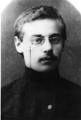 |
AKV as student, 1904 |
 |
Faculty at Tambov Seminary from which Voronsky was expelled in 1905 |
| 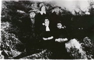 |
Exiles in Yarensk, ca. 1908. Voronsky is sitting at right, next to his future wife, Serafima Pesina |
 |
Mug shot and fingerprints taken by Tsarist Secret Police. Date unknown (ca.1912). |
| 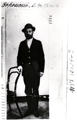 |
Photo from Tsarist Secret Police files, ca. 1912 |
| 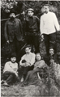 |
Group of exiles in Kem, Arkhangelsk Province, ca. 1912. Voronsky is seated, second from left |
| 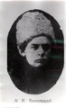 |
Voronsky, ca. 1917-1919. |
| 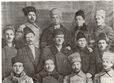 |
Voronsky among Ivanovo delegates to the VIIIth All-Russian Congress of Soviets, Moscow, 1920 |
 |
Voronsky (seated) with Pilniak, standing left. One of other two figures is probably Nikitin. Early 1920s |
 |
Voronsky as member of leadership of the All-Russian Union of Writers, February 1925. |
 |
Funeral Commission for M. V. Frunze. 1925. Third from left: Avel Yenukidze; fourth from left: Voronsky. |
| 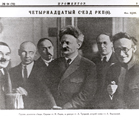 |
Voronsky at XIVth Congress of the RCP, December 1925. |
| 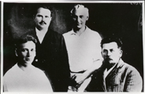 |
Voronsky at reunion with three other Bolsheviks previously assigned to the Putilov works. Kislovodsk, 1926. |
 |
Taken at Jubilee celebrating Krasnaia nov. Herzen House, February 1927. |
| 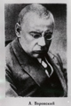 |
Voronsky in the summer or fall of 1927. From: "Vlast’ sovetov za 10 let," Leningrad, 1927, p. 173. |
  |
Photos A and B taken at the time of Voronsky’s arrest by the OGPU in January 1929. |
 |
Voronsky in exile in Lipetsk, September 1929. |
 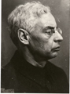 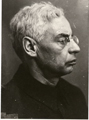 |
Photos A and B taken after arrest by the NKVD on February 1, 1937. Last known photos of Voronsky. |